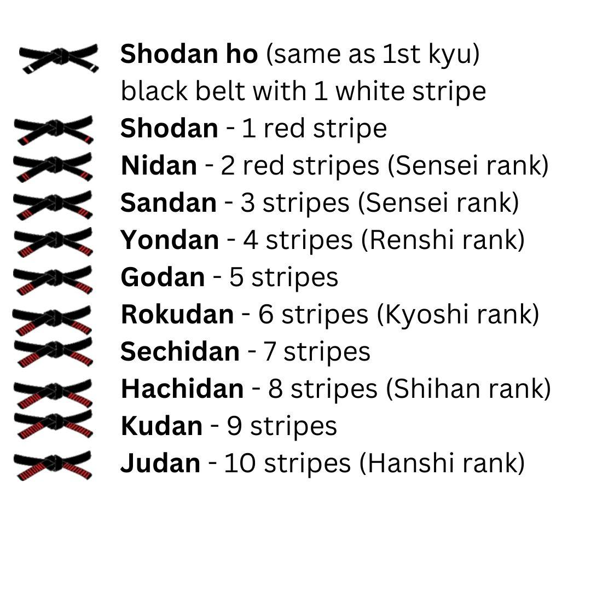

Our System


The modern ranking system in karate is based on the traditional progression from white to black. In our Dojo, a student would advance through four belt colors (white, green, purple, and brown) before achieving a "probationary" black belt (Shodan Ho). Up to three - but no less than one - stripes are awarded to transition from one color to the next one. After a 1-year probation period, a Shodan Ho can receive a first-degree black belt (Shodan). A black belt can have up to 10 degrees (Dan)
In our dojo, promotions are usually given twice a year, one at the end of each semester. (Here you can find a sample of our promotion requirements.) We believe that a test is not merely physical, but rather a combination of the physical, mental and spiritual aspects of our art. The test is meant to be a learning aid to teach the student how to perform under pressure, as well as to help the student clarify techniques in his/her own mind. A student's attitude, spirit, desire, drive, comprehension, as well as his/her physical performance all go into the requirements for rank.
Nevertheless, students should not get distracted by the ranking system. Rank merely denotes the curriculum that a student is working on, and does not specifically show the quality of the student. A student who is over concerned with rank is missing the point of the martial arts training.
Some of our hard working students are rewarded with the black belt status. Please check out black belt page.
Copyrighted 2024 Columbia University Goju-Ryu Karate Club. All rights reserved.